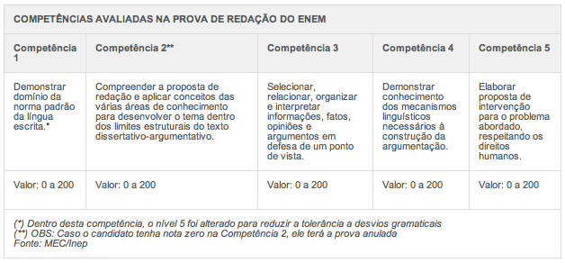
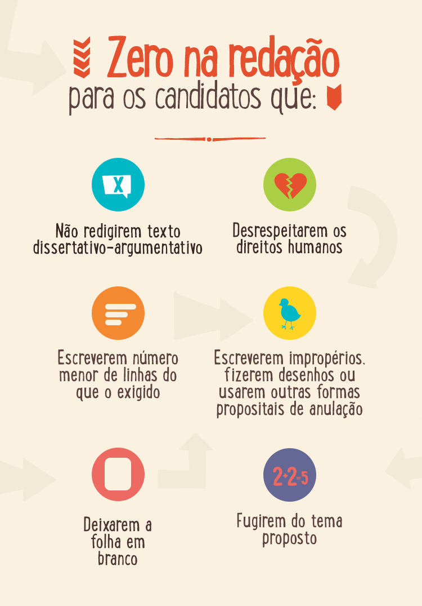

Fazer um rascunho é essencial para se dar bem na prova
O formato de redação escolhido pela grande parte dos vestibulares, inclusive pelo Enem, é a dissertação-argumentativa. Esse gênero textual possibilita que o estudante construa uma tese inicial e a defenda diferentes pontos de vista ao longo do texto. Separamos aqui algumas dicas para você construir um bom texto. Confira!
1º) Veja o tema de redação e faça uma leitura cuidadosa da prova - Essa é a principal dica e vai influenciar todo o seu desempenho. Leia e releia a proposta e os textos de apoio. Dê uma lida também nas questões da prova. Pode ser que alguma informação ajude no tema da redação. Atenção: essa etapa é essencial para que você não fuja do tema.
2º) Elabore o projeto de texto e escolha uma tese - Esse é o momento em que você deve escolher a sua abordagem e os argumentos que usará para defender sua tese. Separe as ideias principais sobre o assunto em um rascunho. Na tese, escolha um tema que você domine para argumentar e expor o seu ponto de vista.
3º) Faça a primeira versão do texto - Nessa etapa do rascunho, preocupe-se com o conteúdo e não com a gramática. Foque sua atenção para organizar os argumentos da melhor forma. As ideias devem fazer sentido e devem estar ligadas entre si. Um texto bem amarrado valoriza a sua argumentação e fará com que o corretor não se sinta confuso ao lê-lo.
4º) Revise o texto: Agora é hora de corrigir a gramática e encontrar outros errinhos na sua redação. Caso tenha dúvida na grafia de alguma palavra, tente substituir por outra expressão. Preste atenção se não existe alguma frase sem sentido perdida pelo texto e avalie se há coerência entre as ideias.
5º) Passe o texto a limpo: Finalmente, essa é a última etapa da redação. Por isso a importância de preparar seu texto em um rascunho. Respeite o limite de linhas e não coloque informações fora da área de correção.
Pronto! Agora é só entregar a prova e esperar pelo resultado.
Lembre-se da estrutura básica da dissertação-argumentativa
Introdução:
Apresente o tema e o recorte que você fará dele. Evite fazer rodeios. É recomendável que a tese seja exposta para direcionar a leitura e mostrar sua linha de raciocínio. Lembre-se de que na dissertação seus argumentos devem ser usados para convencer quem estiver lendo.
Desenvolvimento:
Defenda a sua tese apresentando ideias que a justifiquem, de forma consistente, e apresente seus argumentos. Essa parte é importante, por isso coloque tudo da forma mais clara possível para que o leitor compreenda seu ponto de vista. Para deixar organizado, uma dica é reservar um parágrafo para cada argumento, analisando todos os aspectos que você quer abordar.
Conclusão:
Retome as ideias expostas na introdução, junto com os principais argumentos que a justificam para confirmar a tese e encerrar o debate. Diferente das outras redações, no Enem é nessa parte que você deve propor a solução ao problema, a partir dos pontos já levantados durante sua redação.
